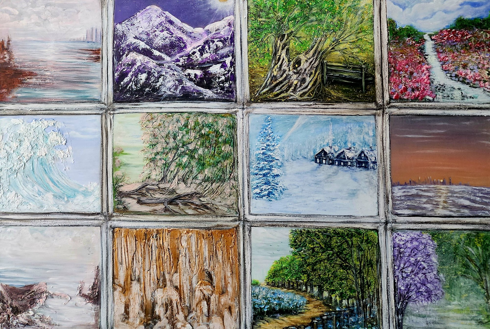

The window
$780 AUD
Buy this paintingOpen your eyes to twelve different views with "The Window." This unique painting frames a beautiful collection of miniature landscapes within a windowpane grid. Moving from frosty snowscapes and crashing waves to golden forests and rocky cliffs, it is a vibrant, deeply imaginative celebration of nature’s endless variety.